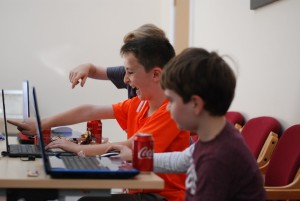
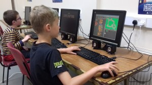
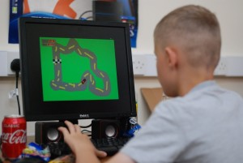
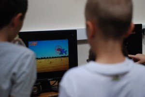
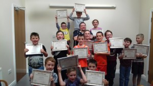

GameLab 1.1
16 kids, 8 classes, 4 games, 1 week and a party!
It was 6 months ago when on a regular visit to my local community centre the idea popped into existence. My local centre has no coding or computer club; in fact they don’t have computers so I decided to change that!
Fast forward to last week and 6 months of work is complete. I have computers built in the form of 10 Raspberry Pi’s, paired with keyboards and mice that were donated by Blanchardstown I.T. and monitors donated by the recycling centre staff at Fingal county council.
Starting a coding club has been the single most rewarding thing I have ever done and the scariest. I was questioning myself for the entire time! Am I ready to do this? Will they listen to me? What happens if I don’t know the answer? Every bad thing I could think of I was SURE would happen to me, but I kept pushing, kept thinking to myself “We win or we learn” So after 6 months of preparation, fear and recruiting kids to join, the first Junior Game Crafters Gamelab began! I had at this point completely filled the first class and had enough kids on the waiting list to start a second class, so start I second class I did
Day 1,
Class 1 about half way through and BOOM! complete failure, I had planned to do a game that spawned eggs that would fall from the sky and would need to be caught in a basket at the bottom of the screen, but in my excitement creating the lesson plan for the week I hadn’t realized that the version of scratch on the Raspberry Pi is different to my current version and I doesn’t have the clone feature. So I had to quickly change the project.
After a few moments of panic I decided to make a simple maze, but this also meant that I had to rework my entire lesson plan. I wanted to be able to teach the children different concepts that they could then build upon as the days passed so changing one class meant I had to pretty much change them all. So lesson learned the hard way “Always prep for your class on the actual hardware your class will use” 
From such a terrible beginning however a week of perfection emerged. I had completely redesigned the lesson plan to accommodate the hardware being used and to be honest simplified the classes to help with the shorter class times. The children loved it! they started with a maze that would send them back to the start if they touched the wall, then I built on that and day two we made a racing game that used the same principals but added in variables for speed and a timer.
Day 3
We had a shark attack game where we had the fish follow the mouse and you had to avoid the sharks for as long as possible, this brought in the random operator and on day 4 reversed the game from day 3 and made a duck hunt clone this also thought the children about countdown timers and messages.
Graduation day was Friday and I couldn’t believe that 6 months worth of work and panic was nearly over! I had organised that we would have a massive party for all the kids and REALLY make a fuss over them for completing the course. Both classes came together for this last event, they got to show off all the games they had made both in class and at home, we had loads of sweets and treats drinks and crisps (potato chips) and we invited all the parents and siblings to come in and have a look at everything that had been created. The day finished with a presentation of certificates and some pictures!
So that’s it the whole camp is finished and I really think that I have started something good here, the kids loved it, the community centre has something different to offer the local community and I get to spread some knowledge and hopefully give the children a chance at a life full of interesting projects and a chance to do something they truly love.
If I can help encourage even one child to do something they will love for the rest of their lives these last 6 months will be completely worth it I should have listened to my mother when I was a child but I only thought of her as the person who gives out when I did something wrong not as the wealth of knowledge and experience that she is, lucky for me she is still here to see that I am trying to encourage people to follow their dreams like she encouraged me to do the same!